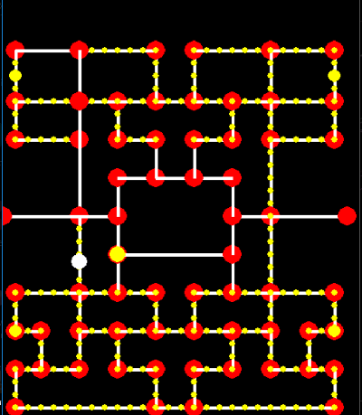
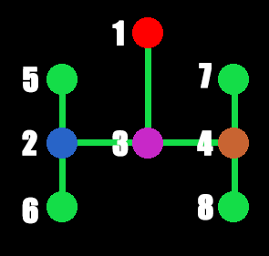
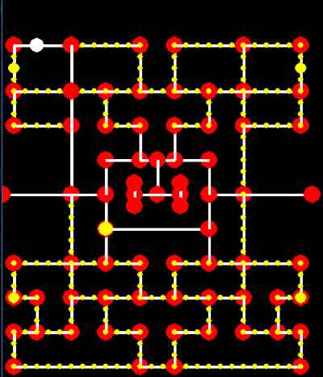

... Pacman Code ...
... Pacman Code ...
Section 11: Giving the Ghosts a Home
Setup
Everyone needs a home, even these mean old ghosts. In the Pacman games the ghost's home is usually located in the middle of the maze and is easily recognized as a big rectangular box. Pacman is never allowed to enter this region. The ghosts themselves don't go in unless they've been eaten by Pacman and they need to respawn. Three of the ghosts also start in this area when a level starts. Other than those situations this area remains pretty much empty. In the image on the right this area is the large empty rectangular area in the middle of the maze. The ghosts are going to have to sometimes enter this area so we'll need to add some more nodes so that they may do so.
These are the nodes we would like to add in the middle of the maze. They are labeled 1-8 so that you'll know which node I'm talking about when discussing these nodes individually. For example, nodes 2, 3, and 4 are the spawn nodes for all of the ghosts. Node 1 is the node that connects this set of nodes with the larger set of nodes we've already created. That's what's great about using linked nodes. You can create multiple sets of nodes in isolation, then link them all together with just one point. So why didn't we just inlclude these nodes in the maze1.txt file originally? The reason is mainly because they are kind of off the grid so to speak. For example, Node 1 has to sit exactly between two nodes. If we placed these nodes in the original file, then these nodes would have to be skewed either to the left or to the right. I think it's just a better idea to create both node sets separately, then stitch them together.
Create a new file called home.txt
0 0 + 0 0
0 0 | 0 0
+ 0 | 0 +
+ - + - +
+ 0 0 0 +
Modify the nodes.py file
Modify the __init__ method in the NodeGroup class
We need to initialize a new list to contain our home nodes. Then we're going to get rid of the call to the createNodeList method and replace it with the call to the createMainList method and createHomeList method. Those two methods don't exist yet, so let's create them.
def __init__(self, level):
...
self.homeList = []
self.createMainList()
self.createHomeList()
Create a new method called createMainList
This is just the main node list that we've been creating. It just calls the createNodeList and setupPortalNodes methods. The reason is because we need to call createNodeList twice, once to create the main nodes, and once to create the home nodes.
def createMainList(self):
self.createNodeList(MAZEDATA[self.level]["file"], self.nodeList)
self.setupPortalNodes()
Create a new method called createHomeList
Similar to the previous method, we call the createNodeList with our home.txt file. We're just going to hard-code it in for now. Then we'll call a method we will create next called moveHomeNodes. I explain that one next.
def createHomeList(self):
self.createNodeList("home.txt", self.homeList)
self.moveHomeNodes()
Create a new method called moveHomeNodes
When we create the home nodes from the text file, it assumes that we want to position the nodes starting at the upper left corner of the screen. So, if we did nothing else after creating the nodes, they would appear in the upper left corner of the screen. However, we actually want to position them between two known nodes from the nodeList list. We are storing the position of those nodes in the MAZEDATA dictionary (although not yet, we will after this). We are storing them in the MAZEDATA dictionary because those two nodes are dependent on the maze. Once we get the two Node objects, we determine the vector that points to their midpoint. We then use that vector to place all of the home nodes right where we want them. They'll also retain their original structure. Then we finally stitch the two node sets together with the final four lines.
def moveHomeNodes(self):
nodeA = self.getNode(*MAZEDATA[self.level]["home"], nodeList=self.nodeList)
nodeB = nodeA.neighbors[LEFT]
mid = (nodeA.position + nodeB.position) / 2.0
mid = Vector2D(int(mid.x), int(mid.y))
vec = Vector2D(self.homeList[0].position.x, self.homeList[0].position.y)
for node in self.homeList:
node.position -= vec
node.position += mid
nodeA.neighbors[LEFT] = self.homeList[0]
nodeB.neighbors[RIGHT] = self.homeList[0]
self.homeList[0].neighbors[RIGHT] = nodeA
self.homeList[0].neighbors[LEFT] = nodeB
Modify the render method
We need to draw our new nodes to the screen so we know that they are where we want them.
def render(self, screen):
for node in self.nodeList:
node.render(screen)
for node in self.homeList:
node.render(screen)
Modify the constants.py file
The two nodes that we want to be the link between the main node map and the home node map are located at (15, 14) in (column, row) format and the node directly to the LEFT of it. We'll be adding more to this dictionary later on as well. Also in a future section we'll figure out a way to not have this hard-coded in.
...
MAZEDATA[0]["home"] = (15*WIDTH, 14*HEIGHT)
Conclusion
We now have all of the nodes we'll ever have to worry about for this game. If you were to play this game yourself as it is, then you'd notice that Pacman and the ghost are able to move into the home nodes. We want to prevent Pacman from doing that. We also want to prevent the ghosts from doing that as well, except when we explicitly tell them to do so. At this point, the one time the ghost may enter the home node is in order to respawn after Pacman has eaten the ghost. So, in the next section we are going to have Pacman eat the ghost (only after eating a power pellet of course), and then have the ghost run back home in order to respawn.
File Structure
- Pacman
- constants.py
- entities.py
- gamecontrol.py
- ghosts.py
- home.txt
- maze1.txt
- nodes.py
- pacman.py
- pellets.py
- stacks.py
- vectors.py